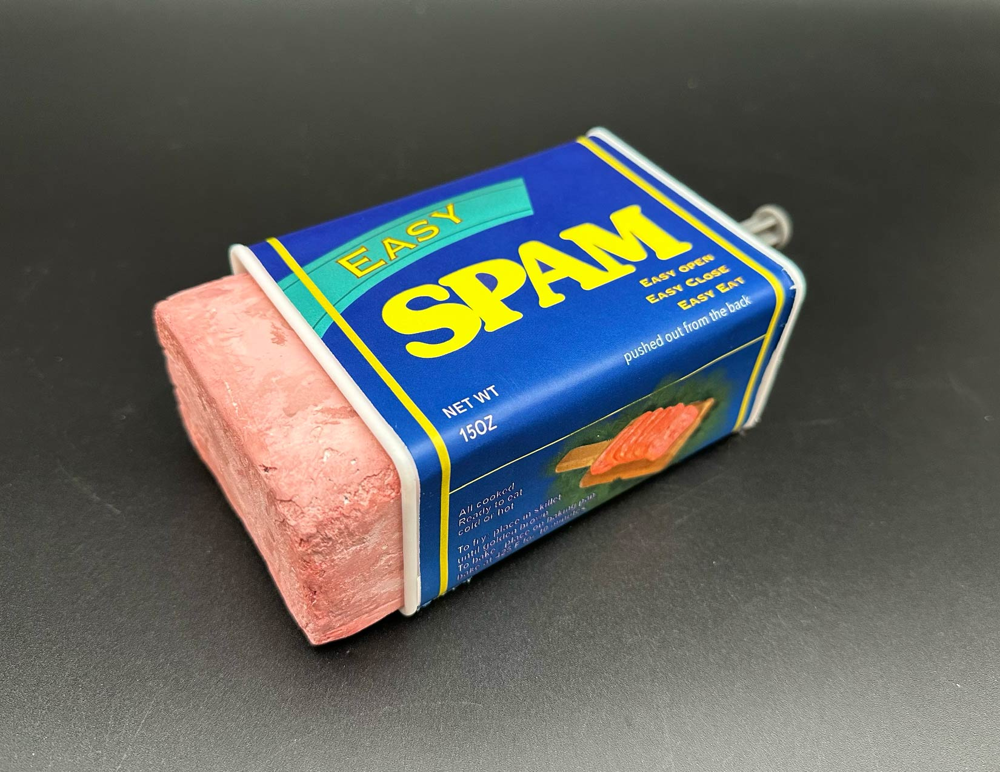
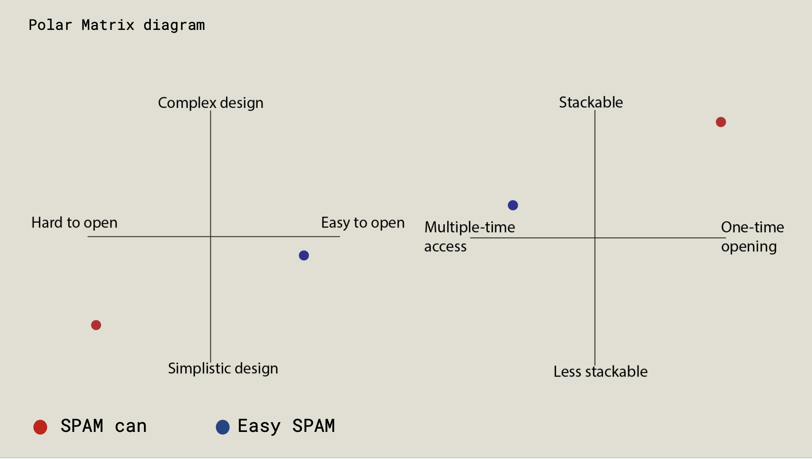
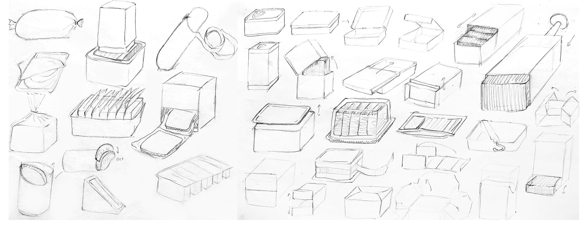
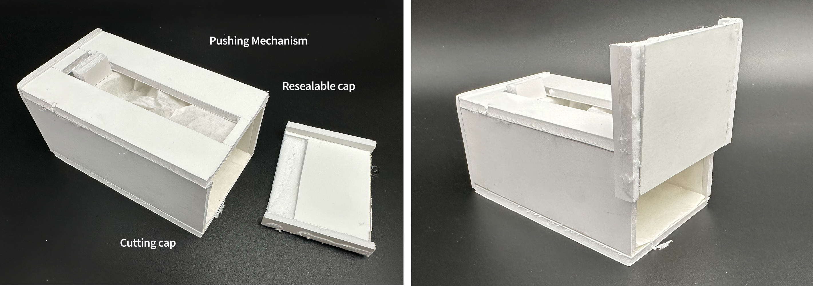
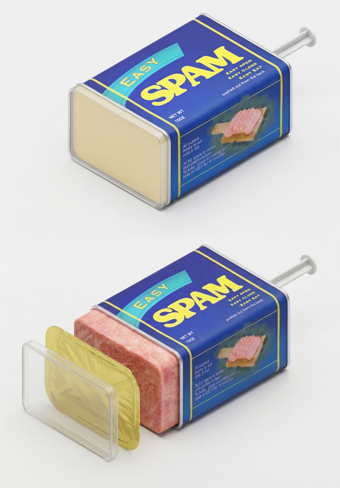
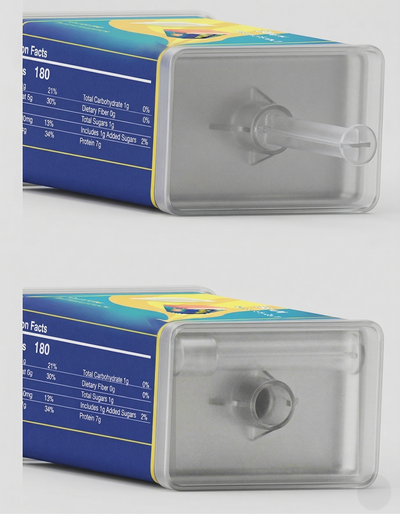
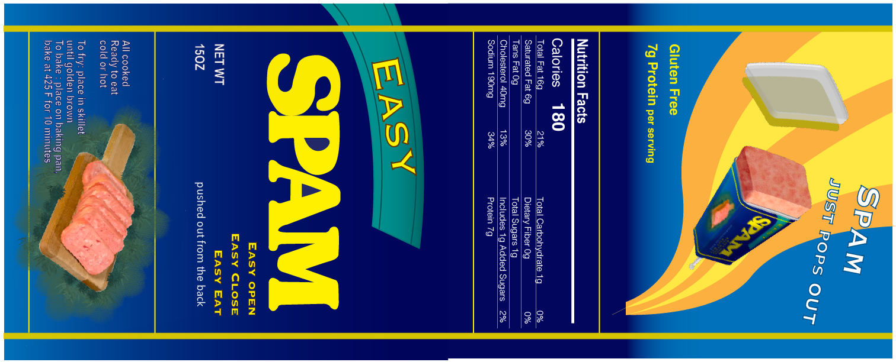

Easy SPAM
Fall 2024
Challenge:
The classic SPAM can is durable and stackable but difficult to open and store once unsealed. Opening requires tools and often leaves sharp edges, while the contents must be removed by tapping the can, making the process inconvenient and messy.
Design:
Redesigned the container to allow easy opening and resealing while maintaining the original's simple, stackable form. Inspired by push popsicles and Pringles cans, the design features a lid, foil seal, and a movable plate that pushes the contents upward without contacting the surface. A detachable plunger stick stores neatly on the back to minimize space. The product was modeled in SolidWorks and prototyped using 3D printing and foam.
Outcome:
Improves accessibility and usability of the classic SPAM container while preserving its compact, stackable qualities. The redesign simplifies serving and storage through a more intuitive mechanism.

Iteration group 1


Prototype

Final design rendered

Push stick feature


Packaging design
